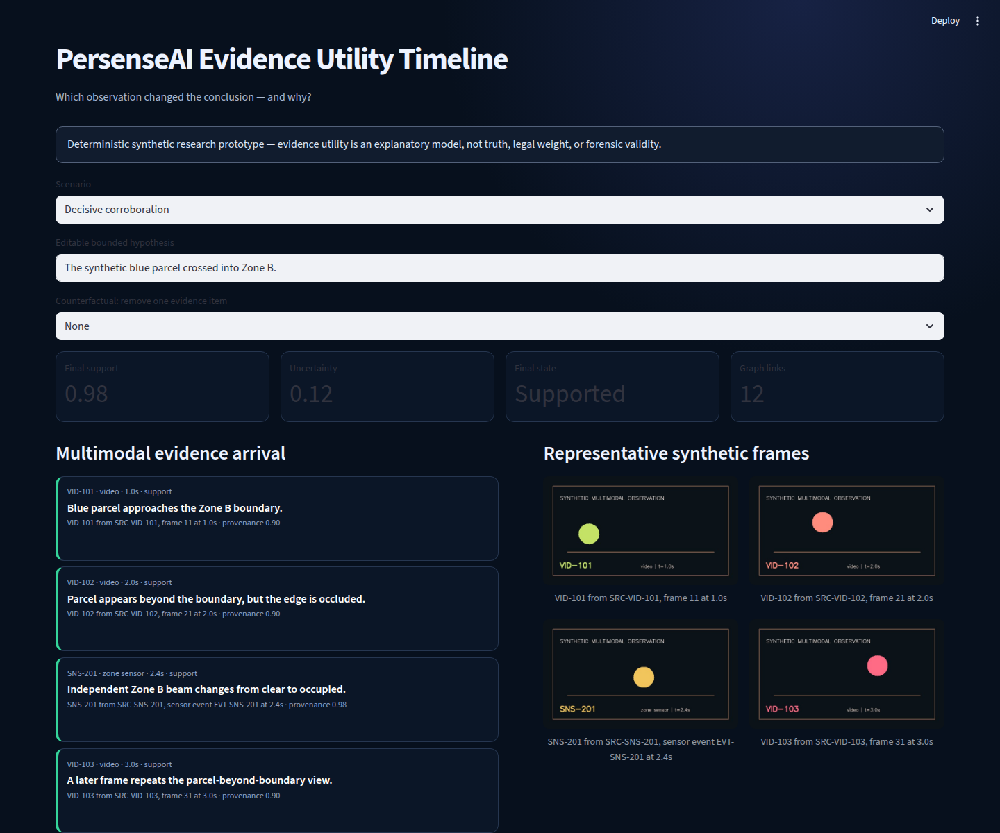
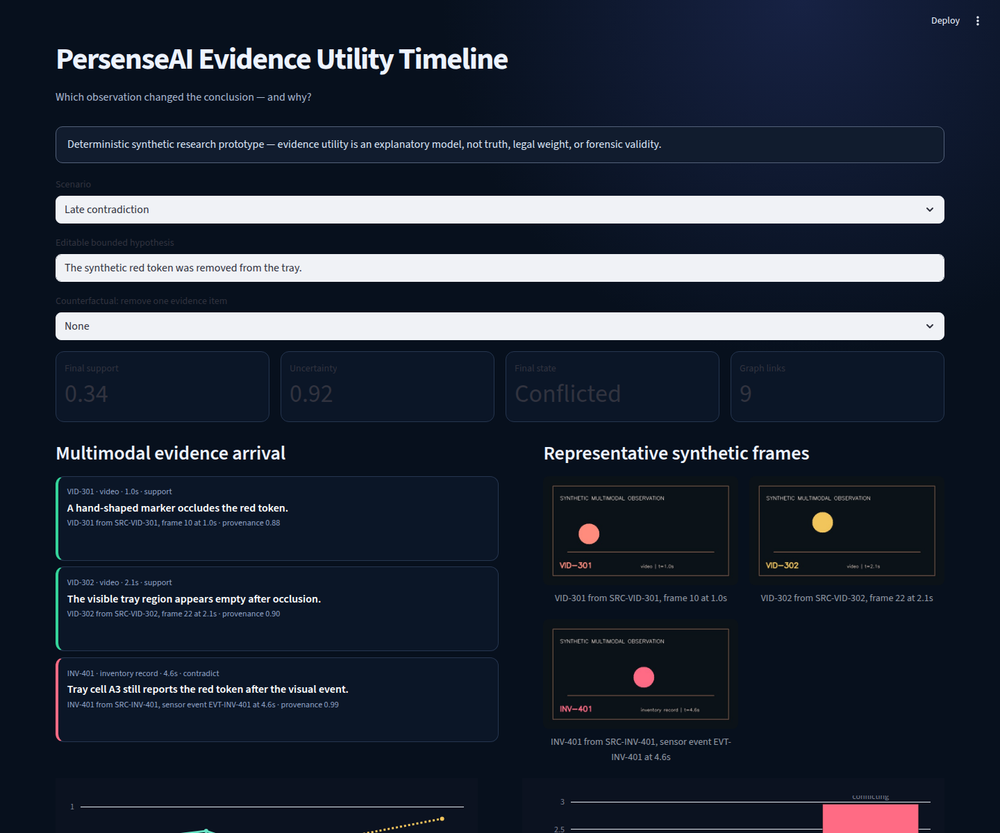
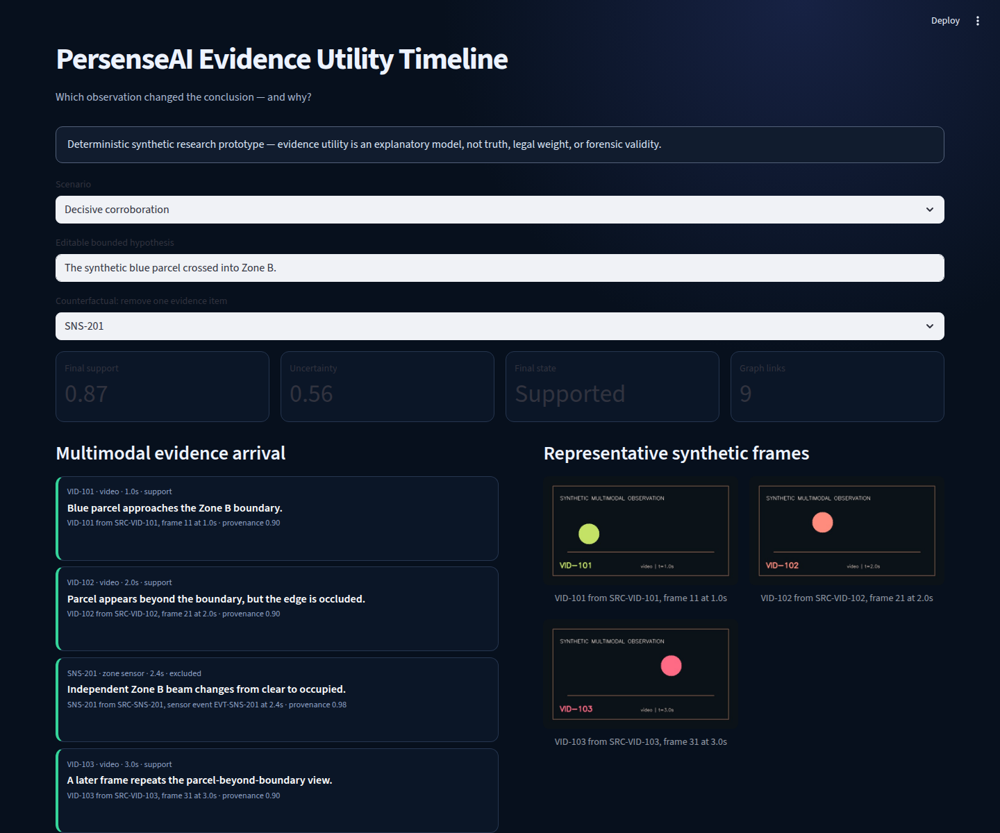
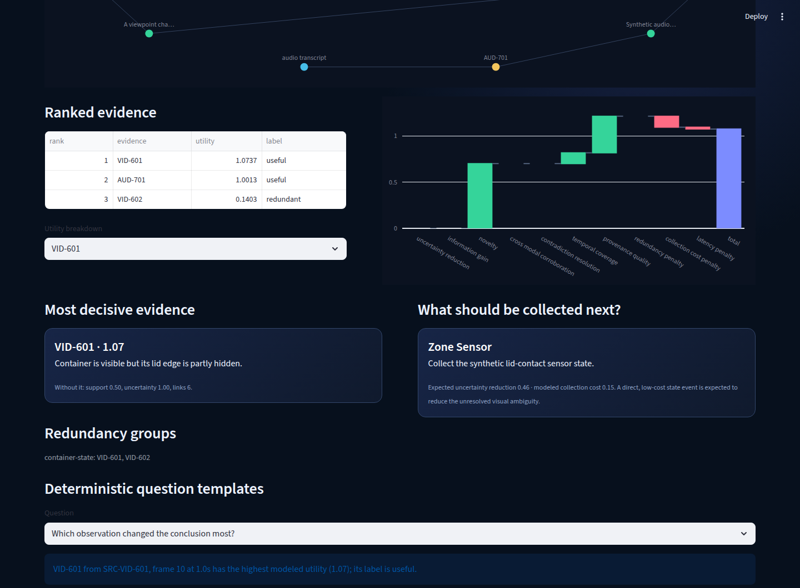

Project 03 · Evidence evaluation
Evidence Utility Timeline
Which observation changed the conclusion — and why?

What the demo shows
Four reproducible scenarios reveal decisive corroboration, a late contradiction, redundant frames, and a missing modality. Each item receives an inspectable utility breakdown and leave-one-out comparison.
Implementation approach
A deterministic baseline combines uncertainty reduction, information gain, novelty, cross-modal corroboration, contradiction resolution, temporal coverage, and provenance quality, then subtracts redundancy, cost, and latency penalties. Weights are heuristic and explicit.
Public origins and related work
The prototype draws on information theory, value of information, Bayesian experimental design, active perception, multisensor fusion, provenance, influence analysis, data valuation, and calibration research. See the public origins note.
Limitations
Utility is not truth, legal weight, calibrated probability, Shapley value, or evidence validity. Scenario-authored weights and recommendations do not establish generalization, forensic validity, or operational reliability.
Provenance statement
All observations, source IDs, assets, annotations, and events are synthetic and independently created. This page contains no private source code or private repository link.
Screenshot gallery



Try the static mini-demo
Step through compact synthetic arrivals, remove one item, and inspect the counterfactual—all in the browser.
Open the mini-demoCompare notes
Working on value of information, evidence attribution, uncertainty, or active acquisition?
Share feedback